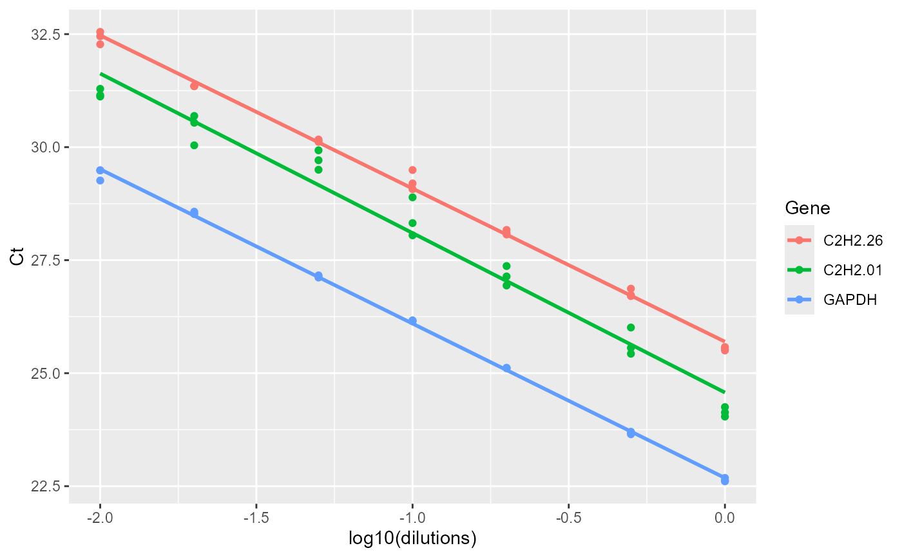

The efficiency function calculates amplification efficiency and returns related statistics and standard curves.
efficiency(df)a data frame of dilutions and Ct of genes. First column is dilutions and other columns are Ct values for different genes.
A list 3 elements.
Slope, R2 and Efficiency (E) statistics
slope comparison table
standard curves
The efficiency function calculates amplification efficiency of genes, and present the Slope, Efficiency, and R2 statistics.
# locate and read the sample data
data_efficiency
#> dilutions C2H2.26 C2H2.01 GAPDH
#> 1 1.00 25.57823 24.25 22.60794
#> 2 1.00 25.53636 24.13 22.68348
#> 3 1.00 25.50280 24.04 22.62602
#> 4 0.50 26.70615 25.56 23.67162
#> 5 0.50 26.72720 25.43 23.64855
#> 6 0.50 26.86921 26.01 23.70494
#> 7 0.20 28.16874 27.37 25.11064
#> 8 0.20 28.06759 26.94 25.11985
#> 9 0.20 28.10531 27.14 25.10976
#> 10 0.10 29.19743 28.05 26.16919
#> 11 0.10 29.49406 28.89 26.15119
#> 12 0.10 29.07117 28.32 26.15019
#> 13 0.05 30.16878 29.50 27.11533
#> 14 0.05 30.14193 29.93 27.13934
#> 15 0.05 30.11671 29.71 27.16338
#> 16 0.02 31.34969 30.69 28.52016
#> 17 0.02 31.35254 30.54 28.57228
#> 18 0.02 31.34804 30.04 28.53100
#> 19 0.01 32.55013 31.12 29.49048
#> 20 0.01 32.45329 31.29 29.48433
#> 21 0.01 32.27515 31.15 29.26234
# Applying the efficiency function
efficiency(data_efficiency)
#> $Efficiency
#> Gene Slope R2 E
#> 1 C2H2.26 -3.388094 0.9965504 1.973110
#> 2 C2H2.01 -3.528125 0.9713914 1.920599
#> 3 GAPDH -3.414551 0.9990278 1.962747
#>
#> $Slope_compare
#> $emtrends
#> variable log10(dilutions).trend SE df lower.CL upper.CL
#> C2H2.26 -3.39 0.0856 57 -3.56 -3.22
#> C2H2.01 -3.53 0.0856 57 -3.70 -3.36
#> GAPDH -3.41 0.0856 57 -3.59 -3.24
#>
#> Confidence level used: 0.95
#>
#> $contrasts
#> contrast estimate SE df t.ratio p.value
#> C2H2.26 - C2H2.01 0.1400 0.121 57 1.157 0.4837
#> C2H2.26 - GAPDH 0.0265 0.121 57 0.219 0.9740
#> C2H2.01 - GAPDH -0.1136 0.121 57 -0.938 0.6186
#>
#> P value adjustment: tukey method for comparing a family of 3 estimates
#>
#>
#> $plot

#>